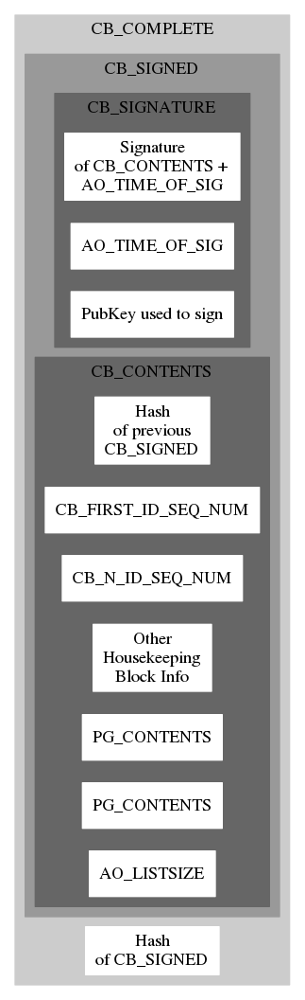
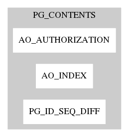

Protocol Ⓐ¹
 Simple, but extensible and interoperable with more sophisiticated protocols. Ⓐ¹ embraces the concept of a single blockchain recorder entity*Ripple managed to briefly achieve over $140B market cap while paying no more than lip-service to the idea of multiple/independent chain recorders.
and builds out a practical implementation on that basis.
Sequenced IDs
Public keys in an Ⓐ¹ blockchain*base share assignment protocol. Long term identities with multiple use key pairs may be layered atop of the base protocol, and the blockmaker's ID is normally reused many times until it is refreshed with a new ID signed by the previous one.
are used only once, associated with the receipt of a specific amount of shares in a single page of a single block. That location is assigned a*monotonically increasing
sequence number which may be used once in a later block, in combination with the matching secret key, to release all of the shares*of course, whoever is giving all of these shares may also be taking a portion of them back under a new key in the assignment
in a new assignment operation. Sequenced IDs only work well for protocols like Ⓐ¹ with strictly linear blockchains, so they are not used in protocols which facilitate blockchain fork and merges.
Data Items and Containers
The primary format specification for blockchain data is how it is stored and communicated when "on the chain." This format may be translated and interpreted and presented in various forms, but the conceptual contents remain the same. DataItems contain all data stored and communicated in Assign Onward protocols, they can be either fixed or variable size. DataContainers are variable size DataItems which contain zero or more data items. All DataItems include an item type code, and 0 or more bytes of data. When in binary form, if a DataItem is variable size, the size of the data immediately follows the item type, then the data follows that. If a DataItem is a DataContainer, then its data section contains zero or more DataItems, each starting with the item type identifier.Variable Byte Codes
Item type identifiers, data sizes, and most other small integers are stored as a variable byte code (VBC) which represents a 64 bit signed integer.DataItem type codes
When travelling in binary form,*DataItems may be represented in json or any other form of nestable key-value storage, but the initial Ⓐ implementations are focused on binary representations.
DataItem type codes are represented as VBCs, and have unique meanings based on code and the container structure that code is nested in. Some codes like AO_INDEX are reused in many locations. Generally, codes which appear multiple times in a block are usually represented as a single byte, while codes for optional, separable or rare items are 2 bytes or potentially longer.
Block format
 A blockchain is made up of a sequence of blocks. The top level structure of a block is shown above. A complete block on the chain consists of a signed block and a hash of that signed block.*The top level hash quashes any concerns about malleability that a signature algorithm alone might have.
The signed block includes a signature of the block contents+time of signing and the public key of the signer.*The matching private key can be used by the blockmaker to claim rewards in a rewarded chain, in a single blockmaker chain like Ⓐ¹ this public key is just the current identity of the blockmaker and should be verifiable with an external trust identity source like a GPG public key server.
The block contents include the hash of the previous signed block (thus making a block-chain), some chain housekeeping info like ID sequence numbers, zero or more pages each of which contains an authorized assignment, and an AO_LISTSIZE which tells how many pages should be present. A page is a simple container which includes the page number as an AO_INDEX (starting at 0), a PG_ID_SEQ_DIFF which is semi-redundant with the ID_SEQ information in the block itself: telling where the IDs in this page start relative to the absolute CB_FIRST_ID_SEQ_NUM in the block. A minimal assignment agreement just exchanges shares between key owners and leaves enough surplus to cover recording fees, additional information of basically any format may be embedded in assignment agreements, in either separable or non-separable form, and can be used to implement additional protocol layers "on top of" the basic Ⓐ¹ protocol, including:Assign Onward
6 July 2018
MIT License
Copyright (c) 2018 Assign Onward
Permission is hereby granted, free of charge, to any person obtaining a copy of this software and associated documentation files (the "Software"), to deal in the Software without restriction, including without limitation the rights to use, copy, modify, merge, publish, distribute, sublicense, and/or sell copies of the Software, and to permit persons to whom the Software is furnished to do so, subject to the following conditions:
The above copyright notice and this permission notice shall be included in all copies or substantial portions of the Software.
THE SOFTWARE IS PROVIDED "AS IS", WITHOUT WARRANTY OF ANY KIND, EXPRESS OR IMPLIED, INCLUDING BUT NOT LIMITED TO THE WARRANTIES OF MERCHANTABILITY, FITNESS FOR A PARTICULAR PURPOSE AND NONINFRINGEMENT. IN NO EVENT SHALL THE AUTHORS OR COPYRIGHT HOLDERS BE LIABLE FOR ANY CLAIM, DAMAGES OR OTHER LIABILITY, WHETHER IN AN ACTION OF CONTRACT, TORT OR OTHERWISE, ARISING FROM, OUT OF OR IN CONNECTION WITH THE SOFTWARE OR THE USE OR OTHER DEALINGS IN THE SOFTWARE.
Copyright (c) 2018 Assign Onward
Permission is hereby granted, free of charge, to any person obtaining a copy of this software and associated documentation files (the "Software"), to deal in the Software without restriction, including without limitation the rights to use, copy, modify, merge, publish, distribute, sublicense, and/or sell copies of the Software, and to permit persons to whom the Software is furnished to do so, subject to the following conditions:
The above copyright notice and this permission notice shall be included in all copies or substantial portions of the Software.
THE SOFTWARE IS PROVIDED "AS IS", WITHOUT WARRANTY OF ANY KIND, EXPRESS OR IMPLIED, INCLUDING BUT NOT LIMITED TO THE WARRANTIES OF MERCHANTABILITY, FITNESS FOR A PARTICULAR PURPOSE AND NONINFRINGEMENT. IN NO EVENT SHALL THE AUTHORS OR COPYRIGHT HOLDERS BE LIABLE FOR ANY CLAIM, DAMAGES OR OTHER LIABILITY, WHETHER IN AN ACTION OF CONTRACT, TORT OR OTHERWISE, ARISING FROM, OUT OF OR IN CONNECTION WITH THE SOFTWARE OR THE USE OR OTHER DEALINGS IN THE SOFTWARE.